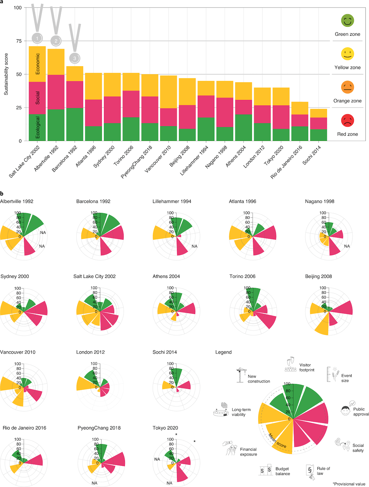
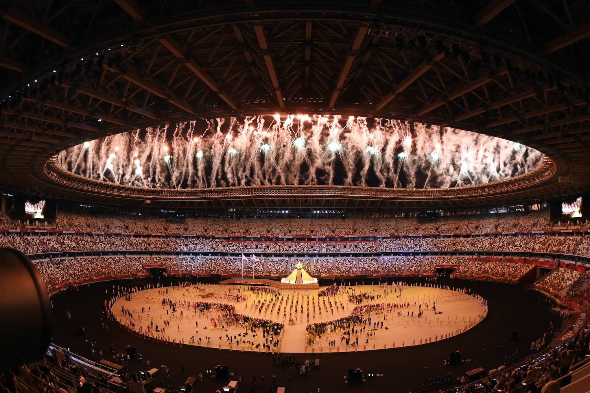

If you’ve tuned into the Tokyo 2020 Olympic games you may have seen
that the event is being branded as the ‘greenest Olympics yet’. With
the media praising the Committee’s green-orientated actions, including
recycled cardboard beds for athletes and the hydrogen fueled Olympic
cauldron—how come these games have also been deemed the third least
sustainable Olympics since 1992?
The Tokyo 2020 Olympic Committee (retaining its original name despite
taking place in 2021) have outlined their aim to ‘deliver sustainable
Games and showcase solution models of global sustainability challenges
to people in Japan and around the world.’
Tokyo’s approaches to achieving ‘environmentally-friendly’ games are
outlined in their Tokyo 2020 Olympic and Paralympic Games
Sustainability Plan. A key factor of this plan includes
purchasing 150% of the carbon credits needed to offset the 720,000
tonnes of CO2 that this major event will be emitting. On paper, this
makes Tokyo 2020 the first ever carbon-negative Olympics.
Naomi Osaka lights the hydrogen-fueled cauldron to open the Tokyo
2020 Olympic games on the 23 July 2021, after a one year delay due
to COVID-19. | CNOSF / KMSP
In terms of renewable energy, aside from the hydrogen-fueled cauldron,
some events are being fully powered by solar arrays (a collection of
solar panels) and wood biomass. The BMX and skateboarding events, for
instance, only use solar power. To top it all off, there is also
electric transportation provided between and around venues.
Other measures that have been implemented include using existing
venues fitted with new energy efficient technologies to host events.
This reduces the costs and energy use that comes with constructing
new buildings—as tends to be common practice amongst past Olympics and
World Cup tournaments. 25 venues used in Tokyo 2020 are from the
previous Tokyo Olympics in 1964, whilst the remaining are 10 temporary
buildings and eight brand new ones.
There is also an emphasis on recycling, with the Committee ensuring
that 95% of materials used are from recycled material or will be
recycled in future. An iconic example is the medals cast from
e-waste (electronic waste). In addition, the Olympic torches were made
from aluminium waste, which was sourced from the temporary housing
constructed after the 2011 earthquake in Japan, and were held by
torchbearers who donned clothing made from recycled plastic Coca-Cola
bottles.
Yuki Arata, the Senior Director of Sustainability on the Tokyo
Organising Committee, has stated that ‘from the outset, Tokyo 2020 has
been dedicated to leveraging the opportunities provided by hosting the
Olympic and Paralympic Games to help build a more sustainable society.’

Ranking the sustainability scores of each Olympics since 1992. Note
that none score in the ‘green’ zone. | Wolfe et al. / Nature 2021
So, why is this event being accused of greenwashing?
Sven Daniel Wolfe and his fellow researchers at the University of
Lausanne, Switzerland, claim that the Games remain superficial in
their attempts to come-across as ‘sustainable’. The team came to this
conclusion by modelling the sustainability measure and environmental
impact of all the Olympic games since 1992, with their findings being
published in Nature this past April.
The model took into account ecological and socio-economic factors to
provide an all-round picture of the Games’ sustainability profile.
Ecological factors included the construction of new venues, the
visitor footprint and the event size. These socio-economic factors
included long-term viability of venues after their use, budget balance,
displacement of locals to make room for the event and public attitude.
The team concluded that the sustainability of the games has declined
over the years.
Tokyo was placed in the research team’s ‘Orange zone’ category, just
behind Sochi 2014 and Rio de Janeiro 2016, in the running for
least sustainable Olympic games. Effectively awarding Tokyo
the bronze medal in the unsustainable Olympics. It may be important to
add, however, that the estimates made within this paper are only a
projection and that the COVID-19 pandemic may bring in some uncertainty.
Wolfe explains that, ‘the majority of the measures that have been
included in this particular Olympics, and the ones that were
particularly mediatised, have a more or less superficial effect’. He
specifies that the downfall is due to the prioritisation of corporate
profit over sustainability and the desire to hold spectacles that
out-do past games.
‘The [sustainable] measures that were particularly mediatised, have a
more or less superficial effect.’
What’s more, the Olympics grow in size over time, which naturally has
numerous environmental consequences. In the 1964 Tokyo Olympics, 5500
athletes competed, which has increased to 12,000 in the current games.
Accommodating for more sports and hosting more athletes leads to a
higher consumption of resources and necessitates more construction.
Other criticisms come from environmental organizations, such as the
Rainforest Action Network, which traced the plywood used to build the
Olympic stadium to Indonesia. This seems to be highly hypocritical,
as the Committee is purchasing resources from a country well-known for
clearing huge areas of rainforest to make room for palm oil
plantations. As timber can sequester carbon, it was chosen in lieu of
other construction materials as another eco-friendly choice.
A move that is less popular given the questionable sourcing, was made
worse by the fact that the stadiums will be largely empty, featuring
no spectators due to COVID-19 restrictions. And while there is an
emphasis on recycling plastics and other refuse, the use of plastics
was not banned in the first place.
Masako Konishi, of WWF Japan and a member of the Olympic
sustainability committee, has said that some aspects of the
sustainability plans are more effective than others. Konishi
specifically praises the climate change policies, ‘the extra
electricity that is required for the Tokyo Olympics will be 100%
renewable energy. And that could be a very good role model for the
other future Olympics.’

The extravagant opening ceremony itself requires huge amounts of energy. | CNOSF / KMSP
While this is a step in the right direction, the carbon credit
purchase will only offset future emissions, not the actual emissions
from the Olympic Games. These Games will add 2.4 million tonnes of
CO2 into the atmosphere.
With regard to Japan’s sustainability efforts, the aforementioned
researcher Sven Daniel Wolfe has said ‘the efforts the International
Olympic Committee is making are important but they are limited and not
enough. From my perspective, unless they heavily limit the
construction aspect and the overall size of the event, they will
always be criticised for greenwashing.’
The paper written by Wolfe and colleagues specifies that the Olympics
can become more sustainable by reducing the event’s size, holding the
Olympics in the same cities on rotation, and creating independent
standards of sustainability.
In short, the steps taken in Tokyo to lessen the environmental impact
of the games are steps in the right direction. It brings to light the
possibility to incorporate sustainable changes into many aspects of
life, such as sports, where the environment is often an afterthought.
‘These Games will add 2.4 million tonnes of CO2 into the atmosphere.’
Not only will this hopefully encourage further environmental
considerations to be taken within future Olympics, but also many of
the actions taken will continue to benefit the city of Tokyo even
after the games have left.
It is important to recognise the impressive efforts that have been
made by Tokyo, but also to look towards the International Olympic
Committee to ensure they hold the games to a higher, standardised
level of sustainability.